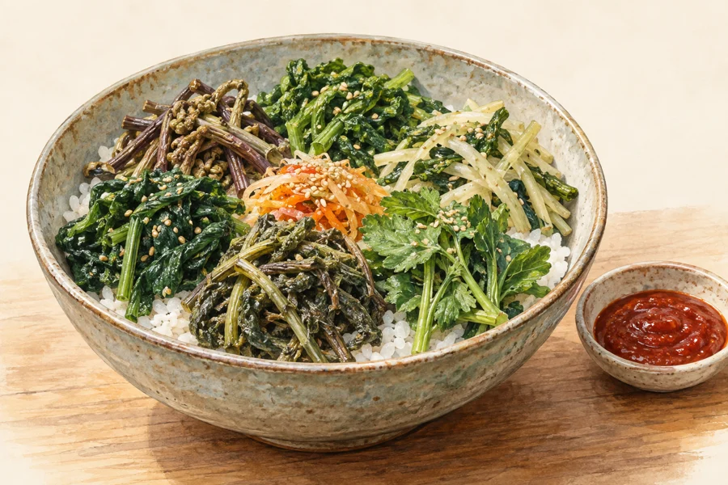
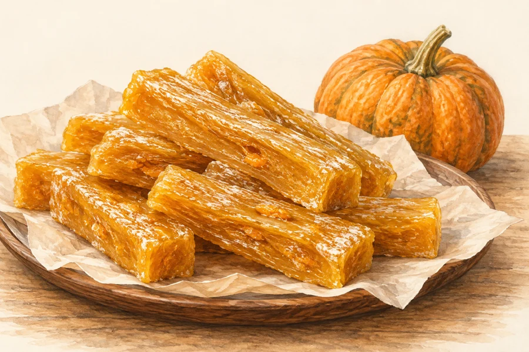
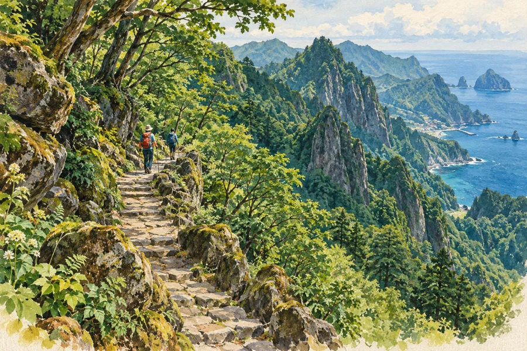
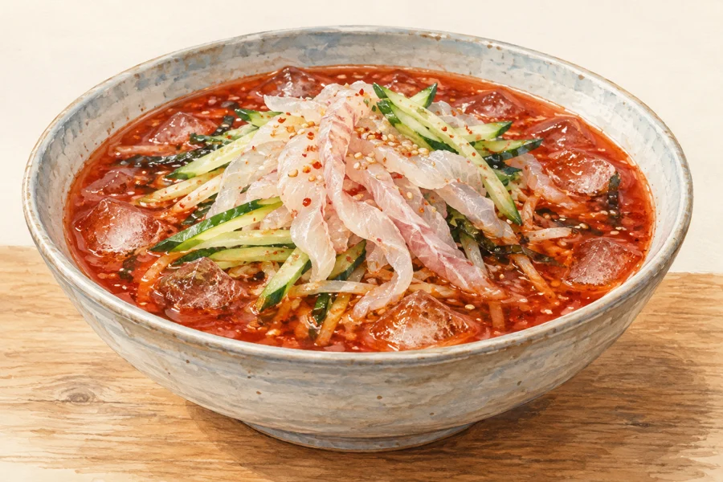
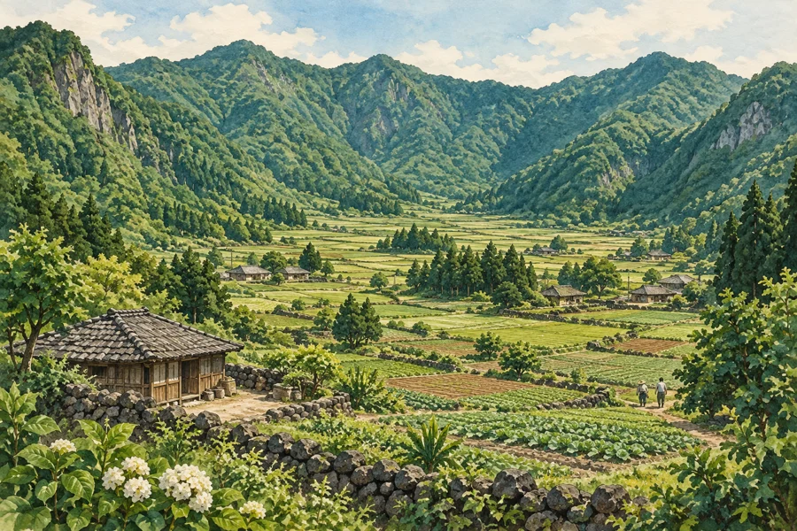

여행 이벤트01 / 20
손끝에서 놓친 오징어
물통 안 오징어를 맨손으로 잡아 보기로 했다.
손끝에서 미끄러졌다이동 없음
한 마리를 붙잡았다고른 말만 +1칸
연달아 잡아 박수를 받았다고른 말만 +2칸
물통 안 오징어를 맨손으로 잡아 보기로 했다.

숲길을 걷다 바위틈에서 불어오는 찬바람 앞에 섰다.

전망대에 오르는 케이블카 앞에 줄을 섰다.
바위 절벽을 따라 걷다 바다가 잘 보이는 곳을 찾았다.
다리를 건너니 숲길과 바다 풍경이 번갈아 나타났다.

나물을 듬뿍 넣은 비빔밥 앞에 둘러앉았다.
어둠이 걷히는 바다를 바라보며 해를 기다렸다.
배에서 내려 굽이진 계단을 천천히 올랐다.
등대로 가는 길에서 발아래 펼쳐진 해안을 내려다봤다.
울릉마블: 스피드 레이싱 · 앞면1 / 11
 여행 이벤트스피드 레이싱울릉도 · 독도여행 이벤트스피드 레이싱울릉도 · 독도여행 이벤트스피드 레이싱울릉도 · 독도여행 이벤트스피드 레이싱울릉도 · 독도여행 이벤트스피드 레이싱울릉도 · 독도여행 이벤트스피드 레이싱울릉도 · 독도여행 이벤트스피드 레이싱울릉도 · 독도여행 이벤트스피드 레이싱울릉도 · 독도여행 이벤트스피드 레이싱울릉도 · 독도
여행 이벤트스피드 레이싱울릉도 · 독도여행 이벤트스피드 레이싱울릉도 · 독도여행 이벤트스피드 레이싱울릉도 · 독도여행 이벤트스피드 레이싱울릉도 · 독도여행 이벤트스피드 레이싱울릉도 · 독도여행 이벤트스피드 레이싱울릉도 · 독도여행 이벤트스피드 레이싱울릉도 · 독도여행 이벤트스피드 레이싱울릉도 · 독도여행 이벤트스피드 레이싱울릉도 · 독도울릉마블: 스피드 레이싱 · 뒷면1 / 11
바닷바람에 모자가 벗겨져 데굴데굴 굴러갔다.

봉지를 열자 일행이 하나씩 손을 내밀었다.

갈림길에서 지도를 펴자 지나가던 사람이 길을 알려줬다.

걷고 난 뒤 시원한 물회를 주문했다.
배 위에서 바위를 보며 서로 닮은 모양을 찾았다.

나무 그늘에 자리를 잡고 물을 나눠 마셨다.
바위 앞에서 서로 사진을 찍어주기로 했다.
전광판을 보고 표를 꺼내 출발 시간을 다시 확인했다.
버스 창밖으로 해안 마을과 절벽이 이어졌다.
울릉마블: 스피드 레이싱 · 앞면2 / 11
여행 이벤트스피드 레이싱울릉도 · 독도여행 이벤트스피드 레이싱울릉도 · 독도여행 이벤트스피드 레이싱울릉도 · 독도여행 이벤트스피드 레이싱울릉도 · 독도여행 이벤트스피드 레이싱울릉도 · 독도여행 이벤트스피드 레이싱울릉도 · 독도여행 이벤트스피드 레이싱울릉도 · 독도여행 이벤트스피드 레이싱울릉도 · 독도여행 이벤트스피드 레이싱울릉도 · 독도울릉마블: 스피드 레이싱 · 뒷면2 / 11
어디를 다녀왔는지 이야기하다 서로 여행 팁을 나눴다.

배 난간 너머로 섬의 윤곽이 서서히 드러났다.
+주사위를 두 번 굴려 합산합니다.
돛이 팽팽해졌다. 이번에는 멀리 간다.
+주사위를 두 번 굴려 더 큰 눈을 씁니다.
출발 전에 한 번 더 몸을 풀었다.
이번 +주사위 이동에 2칸을 더합니다.
짐을 덜었더니 발걸음도 가벼워졌다.
+주사위 눈이 홀수면 2칸을 더합니다.
문득 고른 숫자에 운을 걸었다.
+주사위 눈이 1·2·3이면 2칸을 더합니다.
처음은 느려도 금세 걸음이 붙는다.
+주사위로 고른 말만 이동합니다. 같은 칸의 다른 말은 남습니다.
잠깐은 혼자 걸어보고 싶었다.
+주사위 눈 그대로 또는 1칸 적게 이동할 수 있습니다.
내리고 싶은 곳을 미리 정했다.
울릉마블: 스피드 레이싱 · 앞면3 / 11
여행 아이템스피드 레이싱울릉도 · 독도여행 이벤트스피드 레이싱울릉도 · 독도여행 이벤트스피드 레이싱울릉도 · 독도여행 아이템스피드 레이싱울릉도 · 독도여행 아이템스피드 레이싱울릉도 · 독도여행 아이템스피드 레이싱울릉도 · 독도여행 아이템스피드 레이싱울릉도 · 독도여행 아이템스피드 레이싱울릉도 · 독도여행 아이템스피드 레이싱울릉도 · 독도울릉마블: 스피드 레이싱 · 뒷면3 / 11
이번 −주사위의 후진 거리를 두 배로 합니다.
다시 돌아가서 확인할 일이 생겼다.
−주사위를 두 번 굴려 더 큰 후진 눈을 씁니다.
지나친 풍경을 한 번 더 보러 갔다.
−주사위로 고른 말만 후진합니다. 같은 칸의 다른 말은 남습니다.
사진 한 장만 찍고 따라갈게.
이번 −주사위는 쉼터의 후진 감소를 무시합니다.
오늘은 쉬는 시간도 짧게 잡았다.
이번 −주사위의 후진 거리를 0으로 합니다.
표도 챙겼고, 두고 온 물건도 없다.
나와 고른 다른 사람 한 명이 아이템을 1장씩 뽑습니다.
같이 먹으려고 하나 더 챙겼어.
상대의 다음 이동 차례에 +주사위를 사용하지 못하게 합니다. −주사위는 사용합니다.
바람에 날아간 모자를 잡으러 갔다.
상대의 다음 이동 차례에 +주사위를 배정할 말을 내가 고릅니다.
이번 길은 내가 정해볼게.
상대의 다음 이동 차례에 −주사위를 배정할 말을 내가 고릅니다.
지나온 쪽에 볼거리가 하나 더 있어.
울릉마블: 스피드 레이싱 · 앞면4 / 11
여행 아이템스피드 레이싱울릉도 · 독도여행 아이템스피드 레이싱울릉도 · 독도여행 아이템스피드 레이싱울릉도 · 독도여행 아이템스피드 레이싱울릉도 · 독도여행 아이템스피드 레이싱울릉도 · 독도여행 아이템스피드 레이싱울릉도 · 독도여행 아이템스피드 레이싱울릉도 · 독도여행 아이템스피드 레이싱울릉도 · 독도여행 아이템스피드 레이싱울릉도 · 독도울릉마블: 스피드 레이싱 · 뒷면4 / 11
상대는 다음 +주사위를 두 번 굴려 더 작은 눈을 씁니다.
서두르지 말고 우리도 기다려줘.
상대의 다음 +주사위 이동에서 2칸을 뺍니다. 최소 0칸입니다.
기념품을 너무 많이 샀나 보다.
상대의 다음 +이동에서 고른 말만 이동하게 합니다. 같은 칸의 다른 말은 남습니다.
여기서는 잠깐 따로 돌아보자.
내 앞에 놓인 방해 아이템 1장을 버립니다.
계획을 바꿔 다시 출발한다.

이 말에 내 점수를 겁니다.

이 말에 내 점수를 겁니다.

이 말에 내 점수를 겁니다.

이 말에 내 점수를 겁니다.

이 말에 내 점수를 겁니다.
울릉마블: 스피드 레이싱 · 앞면5 / 11
여행 아이템스피드 레이싱울릉도 · 독도여행 아이템스피드 레이싱울릉도 · 독도여행 아이템스피드 레이싱울릉도 · 독도비밀 베팅스피드 레이싱울릉도 · 독도비밀 베팅스피드 레이싱울릉도 · 독도여행 아이템스피드 레이싱울릉도 · 독도비밀 베팅스피드 레이싱울릉도 · 독도비밀 베팅스피드 레이싱울릉도 · 독도비밀 베팅스피드 레이싱울릉도 · 독도울릉마블: 스피드 레이싱 · 뒷면5 / 11
이 말에 내 점수를 겁니다.
이 말에 내 점수를 겁니다.
이 말에 내 점수를 겁니다.
이 말에 내 점수를 겁니다.
이 말에 내 점수를 겁니다.
울릉마블: 스피드 레이싱 · 앞면6 / 11
비밀 베팅스피드 레이싱울릉도 · 독도비밀 베팅스피드 레이싱울릉도 · 독도비밀 베팅스피드 레이싱울릉도 · 독도비밀 베팅스피드 레이싱울릉도 · 독도비밀 베팅스피드 레이싱울릉도 · 독도비밀 베팅스피드 레이싱울릉도 · 독도비밀 베팅스피드 레이싱울릉도 · 독도비밀 베팅스피드 레이싱울릉도 · 독도비밀 베팅스피드 레이싱울릉도 · 독도울릉마블: 스피드 레이싱 · 뒷면6 / 11
이 말에 내 점수를 겁니다.
이 말에 내 점수를 겁니다.
이 말에 내 점수를 겁니다.
이 말에 내 점수를 겁니다.
이 말에 내 점수를 겁니다.
울릉마블: 스피드 레이싱 · 앞면7 / 11
비밀 베팅스피드 레이싱울릉도 · 독도비밀 베팅스피드 레이싱울릉도 · 독도비밀 베팅스피드 레이싱울릉도 · 독도비밀 베팅스피드 레이싱울릉도 · 독도비밀 베팅스피드 레이싱울릉도 · 독도비밀 베팅스피드 레이싱울릉도 · 독도비밀 베팅스피드 레이싱울릉도 · 독도비밀 베팅스피드 레이싱울릉도 · 독도비밀 베팅스피드 레이싱울릉도 · 독도울릉마블: 스피드 레이싱 · 뒷면7 / 11
이 말에 내 점수를 겁니다.
이 말에 내 점수를 겁니다.
이 말에 내 점수를 겁니다.
이 말에 내 점수를 겁니다.
이 말에 내 점수를 겁니다.
울릉마블: 스피드 레이싱 · 앞면8 / 11
비밀 베팅스피드 레이싱울릉도 · 독도비밀 베팅스피드 레이싱울릉도 · 독도비밀 베팅스피드 레이싱울릉도 · 독도비밀 베팅스피드 레이싱울릉도 · 독도비밀 베팅스피드 레이싱울릉도 · 독도비밀 베팅스피드 레이싱울릉도 · 독도비밀 베팅스피드 레이싱울릉도 · 독도비밀 베팅스피드 레이싱울릉도 · 독도비밀 베팅스피드 레이싱울릉도 · 독도울릉마블: 스피드 레이싱 · 뒷면8 / 11
이 말에 내 점수를 겁니다.
이 말에 내 점수를 겁니다.
이 말에 내 점수를 겁니다.
이 말에 내 점수를 겁니다.
이 말에 내 점수를 겁니다.
울릉마블: 스피드 레이싱 · 앞면9 / 11
비밀 베팅스피드 레이싱울릉도 · 독도비밀 베팅스피드 레이싱울릉도 · 독도비밀 베팅스피드 레이싱울릉도 · 독도비밀 베팅스피드 레이싱울릉도 · 독도비밀 베팅스피드 레이싱울릉도 · 독도비밀 베팅스피드 레이싱울릉도 · 독도비밀 베팅스피드 레이싱울릉도 · 독도비밀 베팅스피드 레이싱울릉도 · 독도비밀 베팅스피드 레이싱울릉도 · 독도울릉마블: 스피드 레이싱 · 뒷면9 / 11
이 말에 내 점수를 겁니다.
이 말에 내 점수를 겁니다.
이 말에 내 점수를 겁니다.
이 말에 내 점수를 겁니다.
이 말에 내 점수를 겁니다.
울릉마블: 스피드 레이싱 · 앞면10 / 11
비밀 베팅스피드 레이싱울릉도 · 독도비밀 베팅스피드 레이싱울릉도 · 독도비밀 베팅스피드 레이싱울릉도 · 독도비밀 베팅스피드 레이싱울릉도 · 독도비밀 베팅스피드 레이싱울릉도 · 독도비밀 베팅스피드 레이싱울릉도 · 독도비밀 베팅스피드 레이싱울릉도 · 독도비밀 베팅스피드 레이싱울릉도 · 독도비밀 베팅스피드 레이싱울릉도 · 독도울릉마블: 스피드 레이싱 · 뒷면10 / 11
울릉마블: 스피드 레이싱 · 앞면11 / 11
비밀 베팅스피드 레이싱울릉도 · 독도비밀 베팅스피드 레이싱울릉도 · 독도비밀 베팅스피드 레이싱울릉도 · 독도비밀 베팅스피드 레이싱울릉도 · 독도울릉마블: 스피드 레이싱 · 뒷면11 / 11